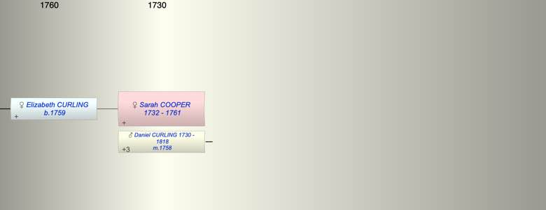

| [Index] |
| Sarah COOPER (1732 - 1761) |
|  |
| b. 1732 |
| m. 03 Jan 1758 Daniel CURLING (1730 - 1818) at St Laurence |
| d. 1761 at St Laurence aged 29 |
| Children (1): |
| Elizabeth CURLING (1759 - ) |
| Grandchildren (4): |
| Ann Cooper PETLEY (1784 - 1847), Mary PETLEY (1787 - 1834), John PETLEY (1788 - 1875), WIlliam PETLEY (1789 - ) |
| Events in Sarah COOPER (1732 - 1761)'s life | |||||
| Date | Age | Event | Place | Notes | Src |
| 1732 | Sarah COOPER was born | ||||
| 03 Jan 1758 | 26 | Married Daniel CURLING (aged 28) | St Laurence | Note 1 | |
| 1759 | 27 | Birth of daughter Elizabeth CURLING | St Laurence | Note 2 | |
| 1761 | 29 | Sarah COOPER died | St Laurence | Note 3 | |
| Note 1: both single and botp by licence ex FMP PR |
| Note 2: bap St Laurence 29 Jul 1759 ex FMP PR |
| Note 3: Sarah wife of Daniel buried 12 Sep 1761 ex FMP PR |
| Created on a Mac™ using iFamily for Mac™ on 8 Oct 2023 |